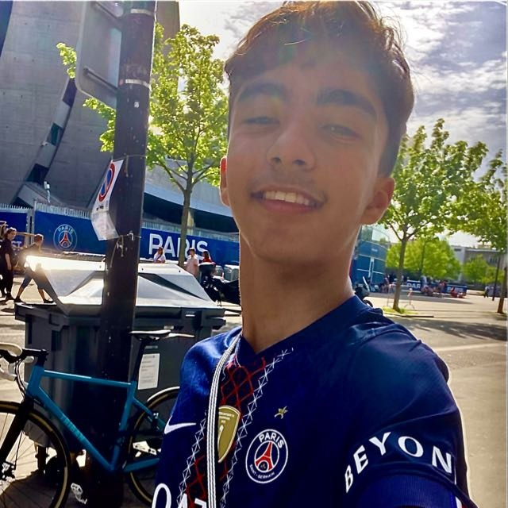

Football Stats
Uma aplicação para explorar estatísticas de equipas e competições de futebol.
Ver projeto ↗Exploro o mundo da programação e da Inteligência Artificial. Aqui partilho os projetos que estou a desenvolver e aquilo que aprendo.
Uma linha de código de cada vez.
Ideias transformadas em experiências reais.
Uma aplicação para explorar estatísticas de equipas e competições de futebol.
Ver projeto ↗Um assistente de Inteligência Artificial criado para responder a perguntas e analisar documentos.
Ver projeto ↗Um site dedicado ao mundo dos supercarros, com galerias e informações sobre automóveis.
Ver projeto ↗
Sempre a aprenderSou um jovem apaixonado por tecnologia, programação e Inteligência Artificial. Gosto de experimentar ideias, criar projetos e aprender coisas novas.
O meu objetivo é desenvolver competências em Python, análise de dados e IA, criando ferramentas que possam resolver problemas reais.
Queres conhecer o meu código ou acompanhar o meu percurso?
Encontrar-me no GitHub ↗Substitui este link pelo endereço do teu perfil.